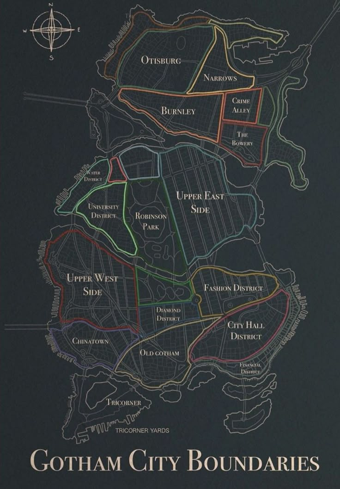

Historia de Gotham
Fundada en el siglo XVII como un asentamiento portuario estratégico, Gotham City floreció durante la revolución industrial gracias al comercio marítimo y su imponente desarrollo arquitectónico.
Con el paso de las décadas, las familias fundadoras impulsaron un horizonte neogótico único en el mundo. Hoy, su historia llena de leyendas urbanas, filantropía multimillonaria y una vibrante vida nocturna convierte cada recorrido en una aventura inolvidable para el visitante.
"Decus et Tutamen
(Honor y Protección)
Características Principales
La Ciudad combina arquitectura gótica monumental cargada de gárgolas con autopistas multinivel y puertos de carga pesada. Sus tres distritos insulares se conectan mediante puentes colgantes levadizos bajo un clima perpetuamente lluvioso y frío, con un diseño vial pensado más para persecuciones a alta velocidad que para el transporte público habitual.
Datos Clave
~ 6.000.000
(Variable según la noche)1635
Asentamiento colonial originalOceánico frío
Lluvias constantes y poca luz solarGothamita
Gótico/aDistritos

Mapa Oficial de Delimitacion TerritorialOtisburg
Sector septentrional de uso industrial y logístico. Es el eje de transferencia de carga pesada, depósitos fiscales y conexión directa hacia las dársenas norteñas.
Puntos de interes:Terminal de Carga Ferroviaria del Norte y Depósitos Portuarios Otis.The Narrows
Isla fluvial angosta situada en el sector noreste. Funciona como zona de contención institucional y paso obligado entre los sistemas de puentes hacia el norte metropolitano.
Puntos de interés: Pasaje del Acueducto y Puente Levadizo Este.Burnley
Núcleo de servicios esenciales y salud pública de Gotham Central. Agrupa la mayor densidad de complejos sanitarios y laboratorios de investigación médica del municipio.
Puntos de interés: Hospital General de Gotham y Complejo Médico Universitario.Crime Alley (Park Row)
Antigua área residencial señorial de finales del siglo XIX actualmente bajo programa de reordenamiento urbano y vigilancia preventiva permanente del GCPD.
Puntos de interés: Teatro Monarch (fachada histórica) y Memorial de Park Row.The Bowery
Distrito popular de alta densidad residencial y comercial periférica, caracterizado por sus talleres mecánicos, mercados vecinales y arterias de tránsito continuo.
Puntos de interés: Mercado Central Este y Estación de Trenes Bowery.Water District
Comuna ribereña occidental dedicada al tratamiento de aguas y control hidroeléctrico, enlace vital entre la bahía y el acueducto central.
Puntos de interés: Estación de Bombeo Municipal y Diques Occidentales.University District
Polo cultural y científico metropolitano. Concentra las principales facultades públicas, bibliotecas históricas y residencias académicas de la región.
Puntos de interés: Universidad de Gotham City y Biblioteca Central Archival.Robinson Park
Reserva natural central y pulmón verde protegido de la metrópoli. Proporciona espacios de recreación pública, conservación botánica y lagos artificiales.
Puntos de interés: Jardín Botánico Municipal y Embalse Central Robinson.Upper East Side
Subdistrito residencial de clase media-alta y profesionales, conformado por bloques de apartamentos neoclásicos y clubes sociales tradicionales.
Puntos de interés: Paseo Costero Este y Museo Cívico de Arte.Upper West Side
Área costera residencial y comercial con vista directa a la bahía abierta, destacada por sus torres residenciales y conexiones náuticas civiles.
Puntos de interés: Club Náutico Metropolitano y Torres del Mirador Oeste.Chinatown
Histórico enclave comercial y gastronómico del sur de Gotham. Reconocido por sus mercados tradicionales de importación, restaurantes y festividades culturales.
Puntos de interés: Mercado del Dragón y Templo Conmemorativo de la Bahía.Old Gotham
El asentamiento fundacional de la ciudad del siglo XVII. Mantiene el trazo colonial original de calles adoquinadas, catedrales centenarias y monumentos históricos.
Puntos de interés: Catedral de Gotham y Torre del Reloj Histórica.Fashion District
Área comercial de indumentaria, sastrerías, estudios de diseño textil y pasarelas de moda de renombre continental.
Puntos de interés: Casa de la Alta Costura de Gotham y Plaza de los Desfiles.City Hall District
Centro cívico, judicial y gubernamental de la ciudad. Concentra las oficinas de la alcaldía, tribunales federales y la central principal de policía.
Puntos de interés: Palacio Municipal (City Hall) y Cuartel Central del GCPD.Financial District
Sede corporativa y bursátil de la costa este. Rascacielos de multinacionales y conglomerados bancarios que dirigen la economía metropolitana.
Puntos de interés: Wayne Enterprises Tower y Bolsa de Valores de Gotham.Tricorner Yards
Península meridional de terminales navales, astilleros y desguace de buques. Gestiona el fondeo y mantenimiento de embarcaciones transoceánicas.
Puntos de interés: Astilleros Navales Tricorner y Faro de la Península Sur.